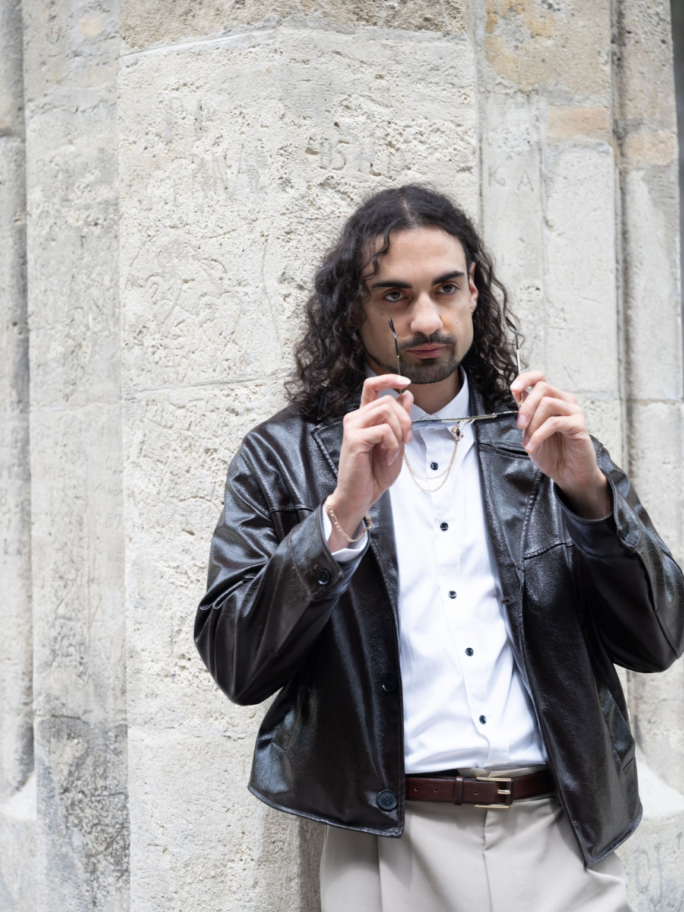

Sólo
Elegantná živá gitara pre hotely, recepcie, svadby, galavečery, firemné večery a komorné koncerty.
OVERIŤ TERMÍN →SLOVENSKO • EURÓPA • MEDZINÁRODNÉ BOOKINGY
Profesionálna živá hudba a performance pre koncerty, festivaly, firemné eventy, svadby a súkromné podujatia.
DOSTUPNÝ PRE BOOKING
Sólo, duo, kvartet, kvintet, live band a tanečný performance.
OVERIŤ DOSTUPNOSŤ →UMELEC PRE KAŽDÉ PÓDIUM
Som profesionálny gitarista, interpret a performer pôsobiaci na Slovensku aj v zahraničí. Prepájam hudobnú kvalitu, improvizáciu, výraz a energiu živého vystúpenia.
Vystupujem sólovo, v duu, s Erik Kováč Kvartetom, Erik Kováč Kvintetom a live bandom. Program prispôsobujem charakteru podujatia – od komorných a jazzových koncertov až po festivaly, firemné eventy, svadby a veľké pódiá.
Samostatnou súčasťou mojej umeleckej práce je aj tanečný performance. Som otvorený koncertom, eventom a umeleckým spoluprácam na Slovensku aj v zahraničí.

FORMÁTY VYSTÚPENÍ
Elegantná živá gitara pre hotely, recepcie, svadby, galavečery, firemné večery a komorné koncerty.
OVERIŤ TERMÍN →Flexibilný program gitara + spev pre svadby, hotely, reštaurácie, kluby, mestské podujatia a firemné eventy.
OVERIŤ TERMÍN →Autorský moderný jazz s dôrazom na improvizáciu, vlastné kompozície a jazzovú tradíciu. Ideálne pre jazzové kluby, kultúrne centrá, festivaly a koncertné pódiá.
POZRIEŤ PROMO →Plnohodnotný koncertný program prepájajúci jazz, funk, soul, bossa novu, pop a vlastnú tvorbu. Pre festivaly, kultúrne podujatia, galavečery a firemné eventy.
OVERIŤ TERMÍN →Plnohodnotný koncertný program v štýle pop, funk, soul, jazz a R&B pre festivaly, mestské oslavy, firemné akcie a veľké pódiá.
OVERIŤ TERMÍN →Sólo tanečná show, pódiový performance a tematické vystúpenia pre galavečery, festivaly, firemné produkcie a kultúrne podujatia.
OVERIŤ TERMÍN →Gitara do kapely, hosťovanie, štúdiové nahrávanie a umelecké spolupráce na Slovensku aj v zahraničí.
OVERIŤ TERMÍN →Individuálny koncept podľa priestoru, publika, technických možností a charakteru podujatia.
OVERIŤ TERMÍN →SKÚSENOSTI & REFERENCIE
Profesionálny gitarista, interpret a performer, absolvent jazzovej interpretácie na JAMU v Brne. Skúsenosti z koncertných pódií, festivalov, autorských projektov a spoluprác na Slovensku aj v zahraničí.
Jazzová interpretácia • 2015 – 2018
Especias • Pódium mladých talentov • 2015
Especias • Cena Live Performance • 2016
Vlastné kompozície • Moderný jazz • Improvizácia
Koncerty • Eventy • Umelecké spolupráce na Slovensku aj v zahraničí
LIVE
Autorský jazzový projekt prepájajúci moderný jazz, jazzovú tradíciu a otvorenú improvizáciu. V centre stojí vlastná tvorba, hudobná interakcia a osobitý zvuk kvarteta.
Erik Kováč – gitara • JR Janči Rigó – klavír • Matej Štubniak – kontrabas / basgitara • Mattia Müller – bicie
REZERVOVAŤ KVARTET →VIZUÁLNA IDENTITA
BOOKING
Vyberte si formát vystúpenia a pošlite termín, miesto a typ podujatia. Ozvem sa vám s dostupnosťou a odporúčaným programom.
Sólo • Duo • Erik Kováč Kvintet • Live Band • Tanečné vystúpenie
POSLAŤ BOOKING DOPYT → POZRIEŤ EPK ↗